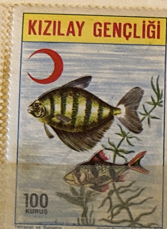
| SOURCE | TITLE| IMAGE MATCH | click to source page |
| kitantik | 1976 Kızılay Pulu 100 Kuruş (ws0448) - Efemera - kitantik | #13432410000701 | 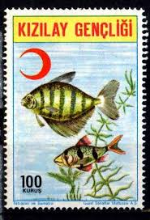 |
| kitantik | Kızılay Pulu (ws0544) - Efemera - kitantik | #13432411000093 | 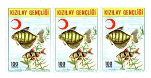 |
| What is this fish in brackish water? | 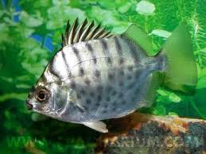 | |
| Wikipedia | Spotbanded scat - Wikipedia | 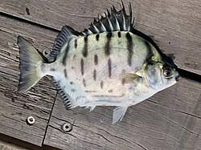 |
| eBay | Fish Postage Singapore Stamps (1963-Now) for sale | eBay | 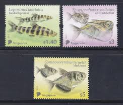 |
| Any ideas what this is found in fish in Melbourne? | 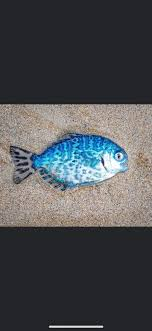 | |
| What are these small fish in West Palm Beach Florida? | 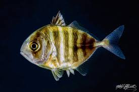 | |
| Mexican Fish.com | Whitemouth Jack | Mexican Fish.com | 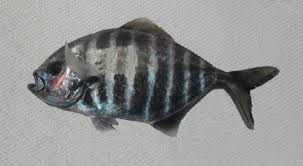 |
| Fandom | Bear dog | Sauropedia Wiki | Fandom | 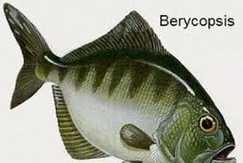 |
| Colnect | Stamp: Black Widow Tetra (Gymnocorymbus ternetzi) (Pakistan(Popular Aquarium Varieties of Tropical fish) Mi:PK 1230,Sn:PK 1045c,Yt:PK 1170,Sg:PK 1265,Sid:PK 1249,WAD:PK045.2004 📮 | 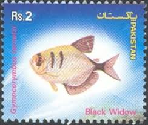 |
| Reefs.com | Jacks of New York | 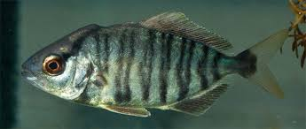 |
| NSW - Handle carefully…! A photo of this fish was recently sent to NSW DPI to identify. It can inflict painful wounds; do you know what it is? We will post the | 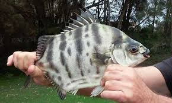 | |
| Wikipedia | Old wife - Wikipedia | 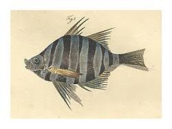 |
| Whats That Fish! | The Banded Scat - Whats That Fish! | 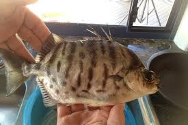 |
| NESP Resilient Landscapes Hub | Fish poster_LR | 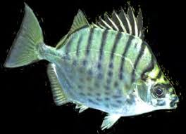 |
| iNaturalist | Stone Bream (Neoscorpis lithophilus) · iNaturalist | 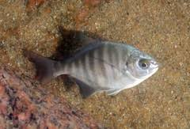 |
| myfishgallery.com | Spotbanded scat - MyFishGallery | 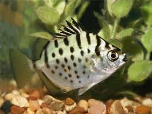 |
| Animal Diversity Web | Myleus_pacu | Animal Diversity Web | 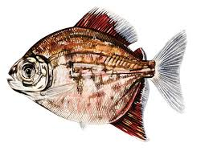 |
| Arkansas Tech University | Enhancing Disease Detection in South Asian Freshwater Fish Aquaculture Through Convolutional Neural Networks | 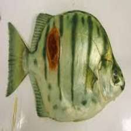 |
| Unleashed - Black Spot Filament Barb PUNTIUS FILAMENTOSUS 5-6cm | Facebook | 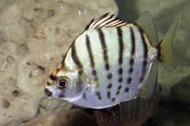 | |
| fisheee.com | Brackish Water Fish | #FishShopPhuketThailand | Fisheee.com | 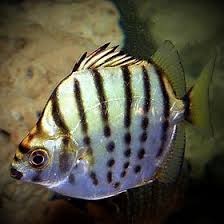 |
| iNaturalist | Bluntnose Jack (Hemicaranx amblyrhynchus) · iNaturalist | 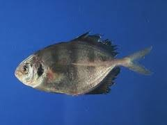 |
| iNaturalist | Photos of Full moony (Monodactylus falciformis) · iNaturalist | 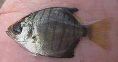 |
| Etsy | 1830s Hand-colored Fish Print, Antique Marine Engraving - Etsy | 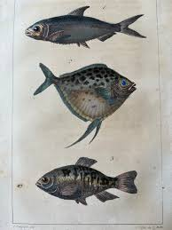 |
| RateMyFishTank.com | Photo #11 - Big Scat Fish - Neons, Tetras, Gourmies, Angels,... | 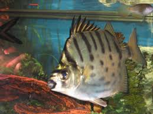 |
| NCFishes.com | Trachinotus falcatus » NCFishes.com | 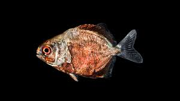 |
| Wikidata | Selenotoca multifasciata - Wikidata | 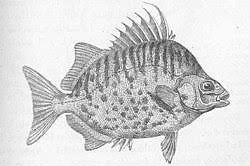 |
| Aquarium Industries | Scatophagus argus (Red Scat) Selenotoca multifasciata (Silver Scat) | 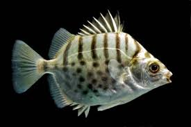 |
| Flickr | jargo | Costa Quebrada | Flickr | 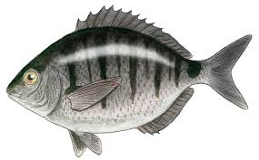 |
| Colnect | Stamp: Black-banded Sunfish (Enneacanthus chaetodon) (Hungary(Tropical Fish) Mi:HU 1826B,Yt:HU 1501ND,Phi:HU 1883V 📮 | 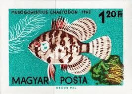 |
| Redtail vs. Calico surfperch: Who's Who? Surfperches can be sneaky look-alikes, but these two favorites have some tell-tale (tail?) traits if you know where to look. Check those dorsal fins and body | 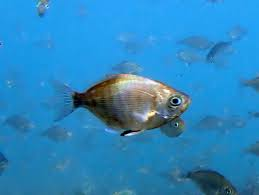 | |
| Exotic Fish Shop | Silver scat for sale - Exotic Fish Shop - 774-400-4598 | 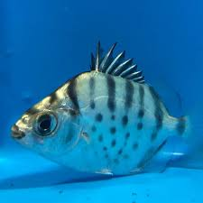 |
| World Stamp Company | French Southern & Antarctic Territory — Fish | 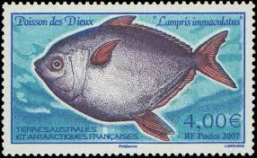 |
| FishAngler - Fishing App | Fishing for Spotbanded scat → Explore Catches, Top Baits & More! | 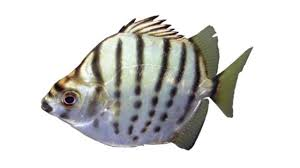 |
| CardCow Vintage Postcards | Lot of 11: Hawaiian Fishes Postcard | 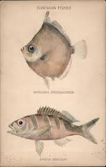 |
| Reef2Reef | Scatophagus growth rate | Reef2Reef | 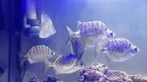 |
| Atlas of Living Australia | Selenotoca multifasciata : Striped Scat | Atlas of Living Australia | 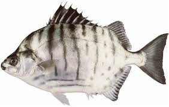 |
| Media Storehouse | Chinese Gizzard Shad, Silver Hatchetfish and Moonfish Print. Art Prints, Posters & Puzzles from Mary Evans | 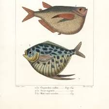 |
| Compustamp | Yemen 1904 Camaran [Island] PPC > Galata Constantinople Bearing 20para Ottoman Turkey Adhesive; RARE & VERY FINE – Compustamp | 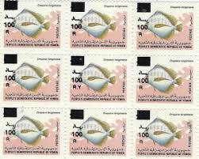 |
| karstenmichael.com | Wildkarst Blog - Freshwater and Brackish Fish, Queensland | 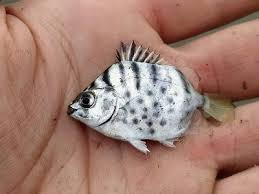 |
| Nakedbreast trevally gamefish characteristics | 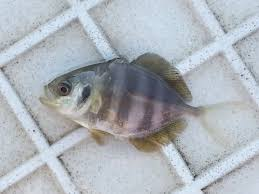 | |
| Fishes of Australia | Selenotoca multifasciata | 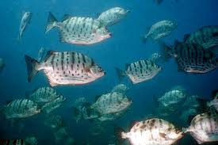 |
| The Aquarium Wiki | Butterfish (Selenotoca multifasciata) - The Free Freshwater and Saltwater Aquarium Encyclopedia Anyone Can Edit - The Aquarium Wiki | 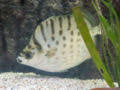 |
| iNaturalist | Permit (MatBio: FISHES - Matanzas Biodiversity) · iNaturalist | 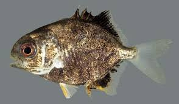 |
| Murex Dive Resorts | Blackwater & Bonfire Diving | North Sulawesi | Murex Resorts | 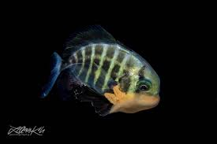 |
| Fandom | Sailfin Velifer | The Parody Wiki | Fandom | 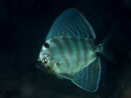 |
| FishBase | Thumbnails Summary | 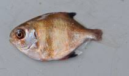 |
| FISHING BOAT Pen Illustration. | 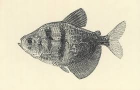 | |
| Wikipedia | False boarfish - Wikipedia | 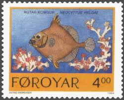 |
| Ex Libris Used Books | The Piranha Book by George Myers, Dr. H Axelrod & H. Schultz HARDCOVER – Ex Libris Used Books | |
| Alamy | Enoplosus armatus, Print, Enoplosus armatus, the old wife (plural: old wives), is a species of perciform fish endemic to the temperate coastal waters of Australia. It is the only modern species in the family Enoplosidae., 1790 Stock Photo - Alamy | |
| FishAngler - Fishing App | Fishing at Mad Island Lake, Texas → Explore Fishing Spots & Catches | |
| FishBase | Thumbnails Summary | |
| Texas A&M | Introduction to Freshwater Fish Parasites 1 | |
| WoRMS - World Register of Marine Species | World Register of Introduced Marine Species (WRiMS) | |
| darvillsrareprints.com | Sir William Jardine "The Naturalist's Library" 1838-43 antique fish prints | |
| Vintage bargains | Products Vintage Bargains | |
| freshwaterfishgroup.com | Fishes of the Fitzroy River, Western Australia, | |
| eBay | France and Colonies Fish Stamps for sale | eBay |